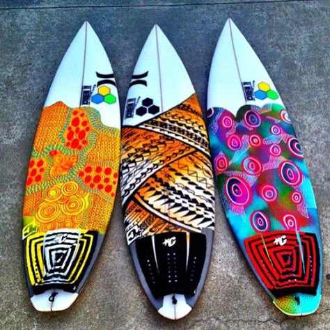
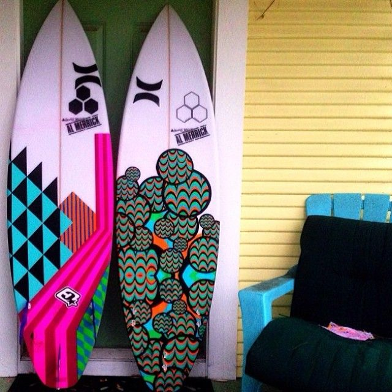
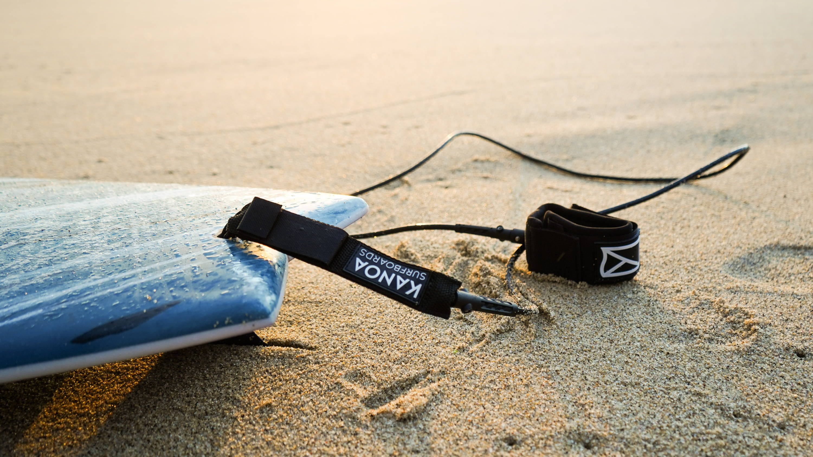
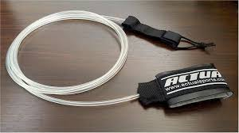
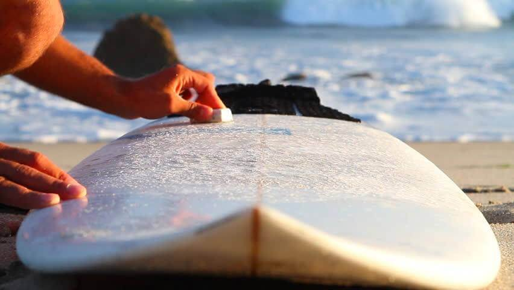
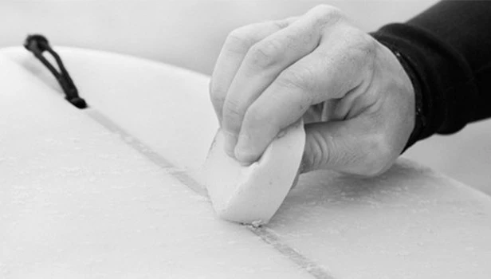
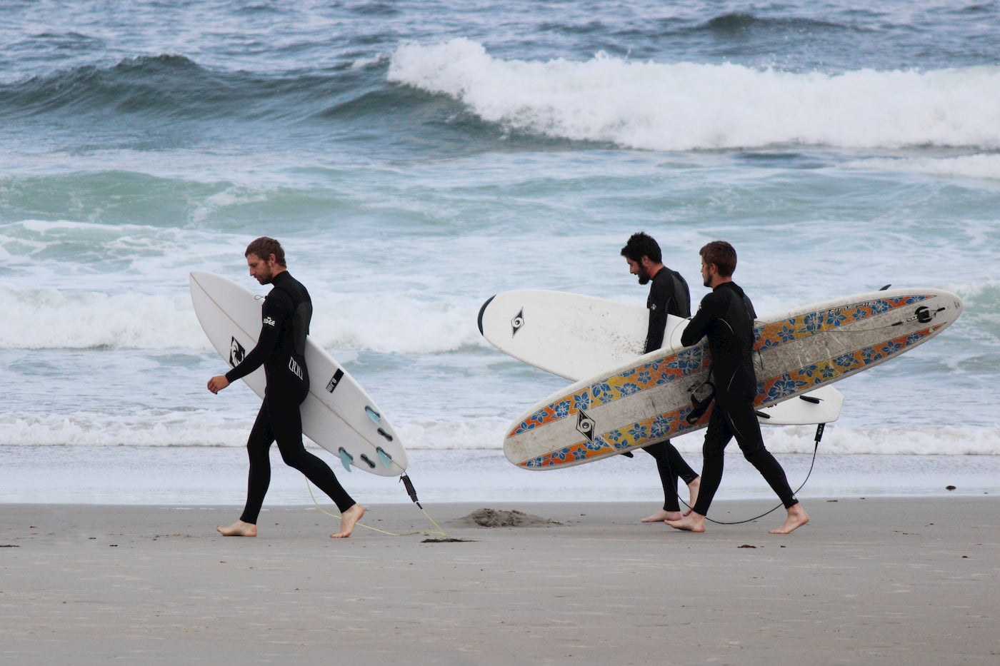
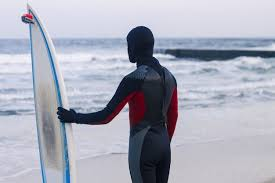
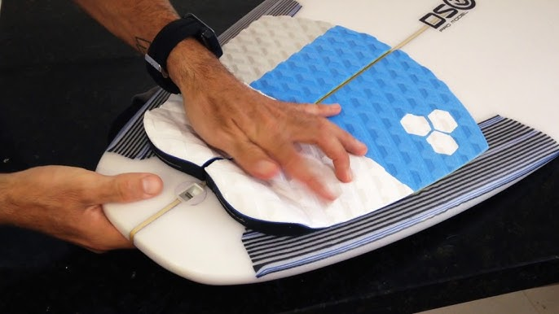
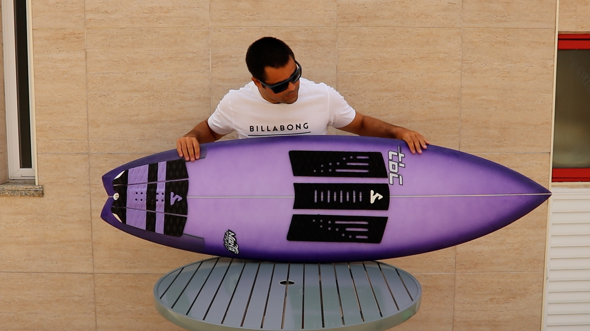

Os equipamentos essenciais para a prática do surf incluem a prancha, o leash, a parafina e a roupa de neoprene, ou rashguard, dependendo da temperatura da água.
Uma prancha de surf é uma plataforma alongada e leve, projetada para que um surfista deslize sobre as ondas. É um equipamento essencial para a prática do esporte, permitindo que o praticante se posicione em pé e aproveite a força da onda. As pranchas variam em tamanho, formato e material, atendendo a diferentes estilos e níveis de habilidade de surf. Escolher a prancha de surf certa depende do seu nível de habilidade, do tipo de onda que você pretende surfar e do seu estilo pessoal.
 O leash, cordinha, strep ou estrepe de surfe, é um elemento muito importante do seu equipamento.Popularmente chamado de cordinha, estrepe ou leash, é um acessório extremamente importante para prática do surf. É o item de segurança que o deixa preso na prancha, e garante que você não perca sua prancha dentro da água. Os leashes de surf são acessórios essenciais para garantir a segurança e o controle durante a prática desse esporte aquático. Com a função de manter a prancha.
 Na prática, ela proporciona aderência e tração para os pés na prancha de surf. Ela também impede que você deslize para fora da prancha enquanto rema para em direção às ondas. Como o nome sugere, a parafina para prancha de surf é feita principalmente de cera de abelha e parafina. A parafina de surf geralmente é feita de cera de petróleo ou cera vegetal e vem em tabletes, que podem ter diferentes formulações para se adequar às diferentes temperaturas da água.
 A roupa de neoprene, também conhecida como wetsuit, é uma peça de vestuário essencial para a prática do surf, especialmente em águas mais frias. Ela serve para proteger o corpo do surfista do frio, isolando-o termicamente e mantendo a temperatura corporal, além de oferecer proteção contra atritos com corais, rochas e a própria prancha. O neoprene é um tipo de borracha sintética, flexível e impermeável, que proporciona isolamento térmico e proteção contra impactos. Ele é o material principal utilizado na fabricação de wetsuits, permitindo que o surfista possa ficar mais tempo na água com conforto e segurança.
 O deck de surf tem a função de evitar que o surfista escorregue da prancha, especialmente durante manobras mais agressivas. Um bom deck não apenas garante maior segurança, mas também aumenta a confiança do surfista ao executar movimentos mais desafiadores. Os decks de surf são um equipamento para pranchas de surf, com o objetivo de funcionar como uma superfície antiderrapante mesmo dentro da água! Aumentando a performance dentro do esporte do surf, dando segurança ao atleta para as manobras mais complexas.
 Estamos localizados em uma das melhores praias para iniciantes e experientes. Veja no mapa abaixo: